Визуал
Всё, что раньше заказывали, сегодня сделаем сами.
У вас уже есть ИИ, который думает и знает.
Сегодня он начнёт показывать
Ассистент
Знает ваш метод, пишет вашим голосом, работает по вашей базе.
Платформа
Проекты, навыки, плагины, расписание, блокноты. Всё из одного окна.
Codex
Своё окружение, AGENTS.md, кодекс и первый собственный проект.
Исследование
Досье, рентген таблицы, прогноз. Решение перестало быть догадкой.
Презентация, фотосессия и ролик перестали быть услугой
А чтобы каждая новая картинка не была «в новом стиле», сегодня заведём один визуальный стандарт на всё.
Пять блоков. После каждого: готовая вещь
Презентации
Четыре кнопки: Kimi, Gemini Notebook, Gamma и .pptx прямо из ChatGPT.
Картинки
Images 2.5 и Nano Banana. Шаблоны, эскиз от руки, команды через слэш.
Визуальный стандарт
ДНК вашего бренда одним файлом. Билборд и карусель с первого раза.
Видео
Фото оживает в ролик со звуком. Бесплатно, в Google Vids.
Google Labs
Полигон Google: Flow, Pomelli, Stitch, Opal. Что, зачем и кому.
Прошёл месяц, и поменялось всё
Всё сегодняшнее работает на том, что у вас уже есть
Платный ChatGPT
Есть у каждого. Картинки, .pptx и визуальный стандарт делает он. Сегодня окупится ещё раз.
Бесплатный Google
Nano Banana, Vids, Flow, Notebook, Labs. Без подписки, нужен только VPN.
Kimi и GLM без VPN
Презентации бесплатно и без очередей. Запасной аэродром на весь вечер.
Codex у каждого
Поставили на занятии 5. Сегодня пригодится один раз: сохранить файлы стандарта.

Презентации
Четыре способа построить дом
Kimi или GLM
Типовой проект. Быстро, без VPN, редактируемый .pptx. Kimi сам ищет данные для слайдов.
Gemini Notebook
Из ваших чертежей. Точно по вашим документам, без выдумок. Теперь отдаёт .pptx.
ChatGPT → Gamma
Красивый дизайн. Контент пишет ChatGPT, дизайн делает Gamma на готовых темах.
ChatGPT сам
Про ваш бизнес. Готовый .pptx прямо из чата, где он уже знает вас и говорит вашим голосом.
Kimi Slides или GLM: тема → .pptx за минуту
Kimi Slides · kimi.com
Бесплатно, русский язык, без VPN. Модель K3 с агентным поиском: сама тянет цифры и факты в слайды.
Загружаете свой референс стиля, получаете редактируемые графики и схемы, на выходе настоящий .pptx.
Минус: в часы пик ставит в очередь. Тогда идём в GLM.
GLM · chat.z.ai
Стабильный, без очередей, без VPN, бесплатно. Агент AI Slides делает .pptx и красивый HTML.
Берите, когда Kimi не отвечает. Тот же промпт, тот же результат.
Также: Qwen рисует слайды картинками. Красиво, но не редактируется.
Один промпт в оба окна
Gemini Notebook: презентация из ваших документов
Суперсила
Точность. Контент только из ваших файлов: КП, прайс, регламент, отчёт. Никаких выдуманных цифр.
С зимы отдаёт настоящий .pptx с редактируемым текстом, а любой слайд правится одной фразой: кнопка «изменить» → «добавь цифры из прайса».
По кликам
1. Блокнот с занятия 4 или новый → загрузить документы
2. Студия → Презентация
3. Формат, длина, язык, поле стиля
4. Готовые стили: materials.neovida.ai/notebooklm-styles
5. Скачать PDF или .pptx
ChatGPT → Gamma: контент отдельно, дизайн отдельно
ChatGPT пишет контент
Промпт «структура под Gamma, 10 слайдов» из шпаргалки. ChatGPT разбивает материал по слайдам: заголовок, три тезиса, подпись к картинке. Копируем весь ответ.
Gamma делает дизайн
gamma.app → Create → Paste in text → вставили → выбрали тему → Generate. Лучший визуальный редактор: слайды правятся кликом мыши.
Бесплатно: 400 кредитов разово, до 10 слайдов. Дальше по подписке, и с этого года каждая правка тоже стоит кредитов.
ChatGPT отдаёт готовый .pptx
Четыре подхода: сравнение
Познакомьтесь со всеми, работайте с двумя
Презентация в любом стиле, который вам понравился
Создайте презентацию
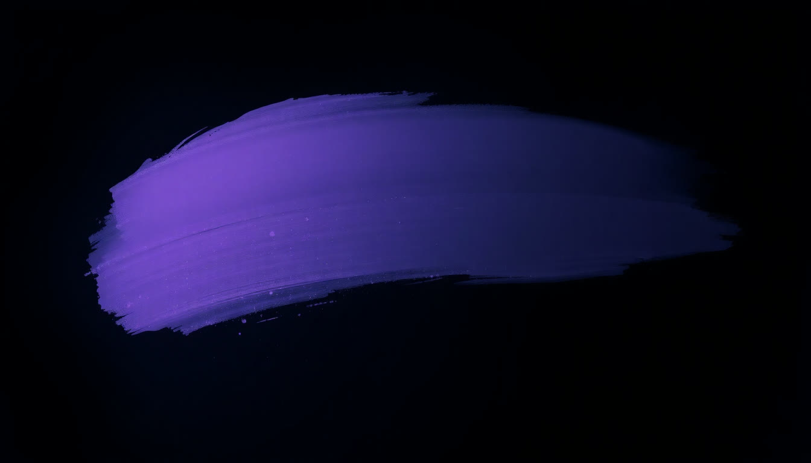
Картинки
Два топ-инструмента уже у вас в кармане
ChatGPT Images 2.5
Создаёт и переделывает. Вышла позавчера. Пишете в тот же чат «нарисуй…» или загружаете своё фото и говорите, что поменять.
Текст на картинке по-русски, лицо с вашего фото не теряет, правки держит через десять ходов. Работает в вашей подписке.
Nano Banana 2 в Gemini
Второй инструмент и бережёт лимиты. Кнопка «+» → «Создание изображений» на бесплатном аккаунте. Та же кнопка, что с занятия 3.
Сильна в редактуре своего фото и в сериях: держит до пяти персонажей и до десяти предметов одинаковыми.
Что появилось позавчера
Эскиз от руки
Пишете @Sketch, рисуете каракулю прямо в чате, добавляете фразу. Он доделывает до готовой картинки.
Галерея шаблонов
Кнопка «Создать изображение» открывает плитки: Product photo, Headshot, Flyer, Merch, Infographic. Нажали и подставили своё.
Лицо с фото держит
Загрузили себя или товар: в новой сцене, стиле и композиции объект остаётся узнаваемым.
Правки держатся
«Фон темнее», «убери вывеску», «шрифт крупнее»: меняется только то, что просили. В два раза быстрее, чем 2.0.
Галерея открывается кнопкой «Создать изображение»
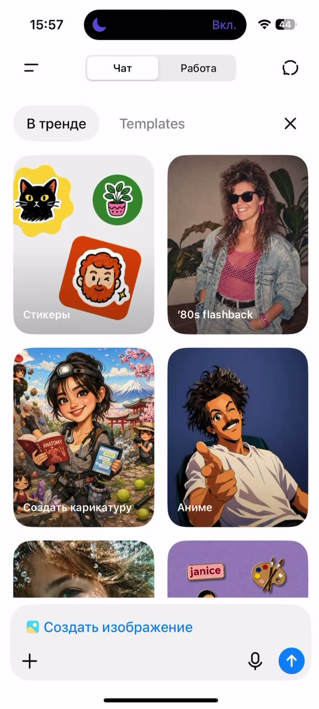
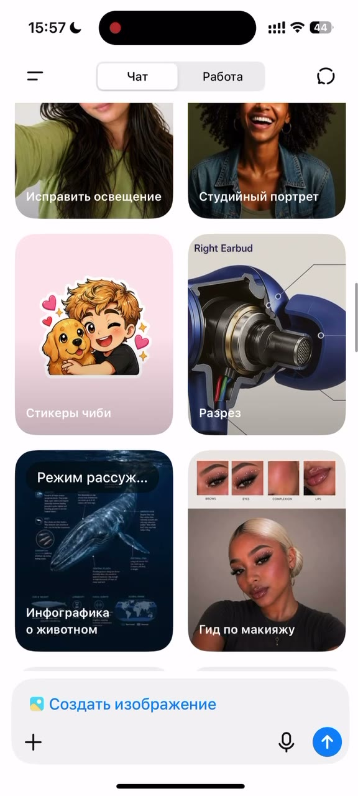
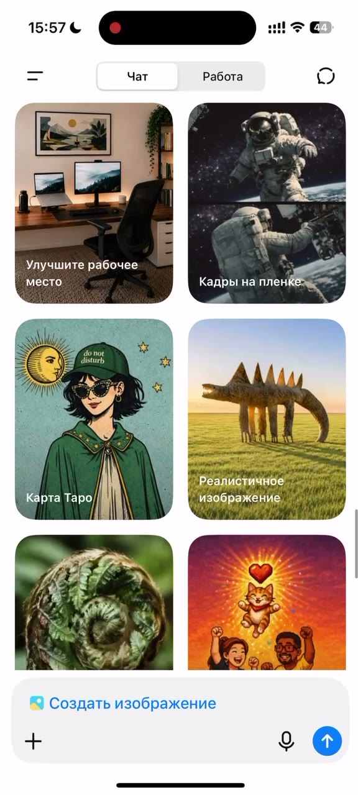
Двенадцать плиток, которые закрывают ваш квартал
Каракуля от руки → готовая картинка
План дома на салфетке
Нарисовали коробку, крышу, окна. Фраза: «фотореалистичный фасад дома по этому плану, вечерний свет, участок в Башкирии». Клиент видит дом до сметы.
Схема зала или стенда
Прямоугольники и стрелки: где сцена, где столы. Фраза: «визуализация мероприятия клуба на 60 человек в стиле делового ужина».
Раскладка карточки
Набросали, где фото товара, где цена, где кнопка. Фраза: «карточка для маркетплейса по этой раскладке, наш товар с фото». Композиция ваша, отрисовка его.
Формула промпта: пять деталей
Объект
что на фото, конкретно
Сцена
где и когда
Стиль
фото, арт, 3D, editorial
Свет
мягкий, закатный, студийный
Формат
16:9, 1:1, сторис 9:16
10 правил промптинга для визуала
Команды через слэш: одно слово вместо абзаца
База 1 · десять команд по фотографиям
Приложили своё фото, написали команду, добавили одну деталь словами. /photoseries серия кадров из одного фото · /outfit примерить чужой образ · /pose повторить позу с референса · /droneview тот же кадр с высоты · /xray · /glass · /billboard товар на городском щите · /adcreative рекламный макет из фото товара · /cartoon
База 2 · 102 команды для визуалов
Десять разделов: разбор и структура, схемы и инфографика, сравнения, посты и карусели, реклама и наружка, мокапы, формы и модели, истории, идеи и метафоры, стиль. /infographic · /beforeafter · /explodedview · /roadmap · /carousel · /mockup
Ваше фото в новой жизни
Поменять фон
Товар из гаража переезжает в светлую студию на мраморный стол.
Примерить стиль
Зал в другом цвете стен, вывеска в другом шрифте. До ремонта.
Деловой портрет
Селфи превращается в фото для сайта: пиджак, свет, фон офиса.
Серия в одном стиле
Пять карточек с одним героем и одним светом. Карусель, которая выглядит как одна.
Возьмите готовый: три библиотеки
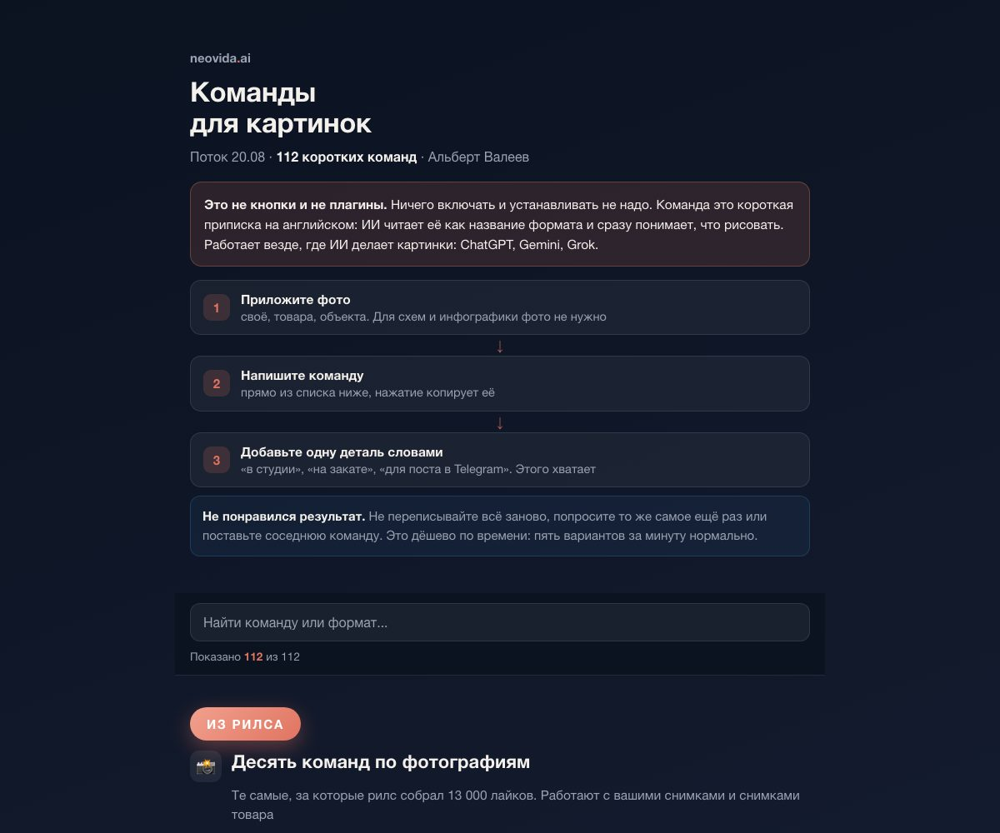
Познакомьтесь со всеми, работайте с двумя
Карточка товара, портрет, редактура живого фото
Одна картинка под ваш бизнес
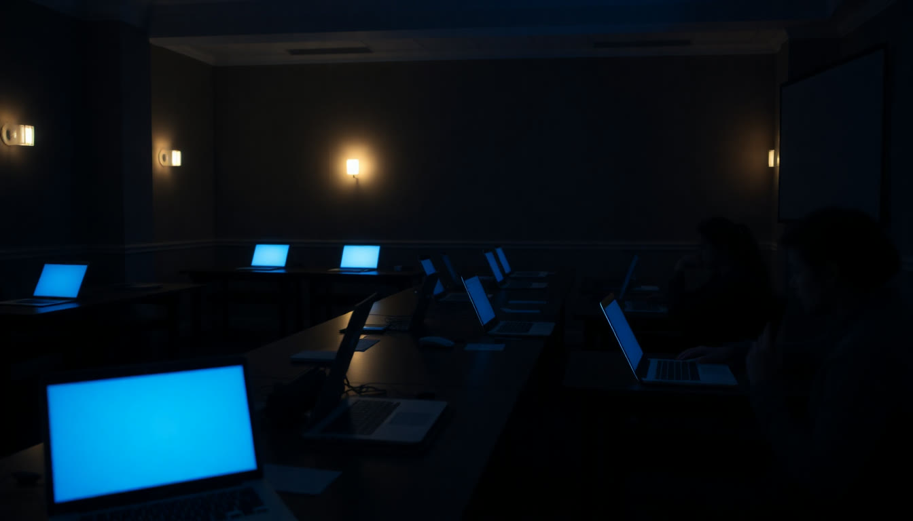
Визуальный стандарт
Каждая новая картинка в новом стиле. Так бренд расползается
Как обычно
Понедельник: пост в синем. Среда: баннер в оранжевом. Пятница: презентация со стоковыми фото. Клиент видит три разные компании.
Каждый раз объясняете модели заново, какие у вас цвета и шрифты. И каждый раз чуть-чуть не то.
Со стандартом
Один раз ИИ разбирает ваши материалы и записывает правила визуала в файл: цвета в HEX, шрифты, сетка, свет на фото, что можно и что нельзя.
Дальше этот файл прикладываете к любому запросу. Билборд, карусель, обложка, слайд выходят «ваши» с первого раза. Даже в младших моделях.
Конвейер в три шага
Загружаем материалы
10–20 файлов: скриншоты сайта, посты и сторис, логотип, презентация, упаковка, фото объектов, визитка. Всё, где виден ваш стиль.
Вставляем промпт «Визуальный стандарт»
Готовый, целиком, из шпаргалки. Он велит ИИ найти повторяющиеся правила, отделить подтверждённое от догадок и ничего не выдумывать.
Получаем два файла
brand_style_sheet.png: мини-гайд по стилю одной картинкой.
brand_style_standard.json: визуальная ДНК для всех будущих задач.
Два места, оба у вас есть
ChatGPT
Новый чат, самая сильная модель из списка: GPT-6 Astra, если уже появилась, иначе GPT-5.6 с расширенным размышлением. Прикрепили материалы, вставили промпт.
Через несколько минут отдаёт картинку и JSON. Если JSON пришёл текстом в чат: «создай и прикрепи файл brand_style_standard.json».
Codex
В своём окружении с занятия 5: папка «бренд», внутрь исходники, в чат тот же промпт. Он сам сохранит оба файла рядом с материалами.
Плюс: файлы лежат в папке, а не в чате. Любой следующий проект в Codex сможет их прочитать сам.
Не «модно и премиально», а правила, которые можно повторить
Цвета
Основные, акцент, фон, текст. Каждый в HEX и с ролью: где применять
Шрифты и иерархия
Заголовок, подзаголовок, текст, подпись. Начертания, регистр, интервалы
Сетка и графика
Отступы, скругления, линии, рамки, узоры, иконки, тени, эффекты
Фото и do / don't
Свет, ракурсы, кадрирование, люди в кадре. Что можно и что ломает бренд
Так выглядит лист стиля: мини-брендбук одной картинкой
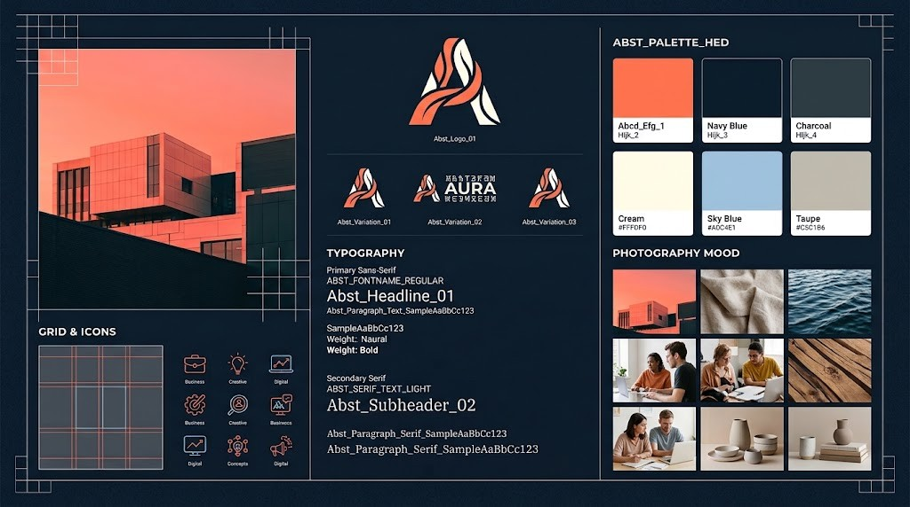
Пример · сгенерировано сегодняНовый чат + файл стандарта + одна фраза
Три выхода, если своих материалов пока мало
Бренд, который нравится
В ролике взяли сайт Т-Банка. Берёте компанию из своей ниши, чей визуал «вот бы мне так»: скриншоты сайта и соцсетей → стандарт. Крадём стиль, не контент.
Свои соцсети и документы
Скриншоты профиля, десять лучших постов, обложка канала, КП в PDF, фото объектов. У блогера и школы материалов больше, чем кажется.
Пять картинок «как хочу»
Сгенерировали в ChatGPT пять визуалов, которые нравятся, добавили логотип и цвета словами → стандарт из них. Бренд с нуля за вечер.
Скриншоты → стандарт → билборд и карусель
Свой стандарт, билборд и карусель
Перерыв 10 минут
Видео
Где бесплатное видео живёт прямо сейчас
Фото + одна фраза = 10 секунд видео
Чашка кофе у окна: 50 секунд ожидания, 10 секунд видео со звуком
 кадр из ролика · Google Vids · Omni
кадр из ролика · Google Vids · OmniЭто витрина, не завод
роликов в месяц в Vids
Для сторис, сайта и проб хватает. Тратьте на задачу, не на баловство.
кредитов в день в Flow
Ещё пара роликов ежедневно. Продление и монтаж словами тоже там.
это платные сервисы
Поток роликов каждый день: Kling, Higgsfield, Runway. Витрина в конце блока.
Оживите свою картинку
Куда расти, когда бесплатного станет мало
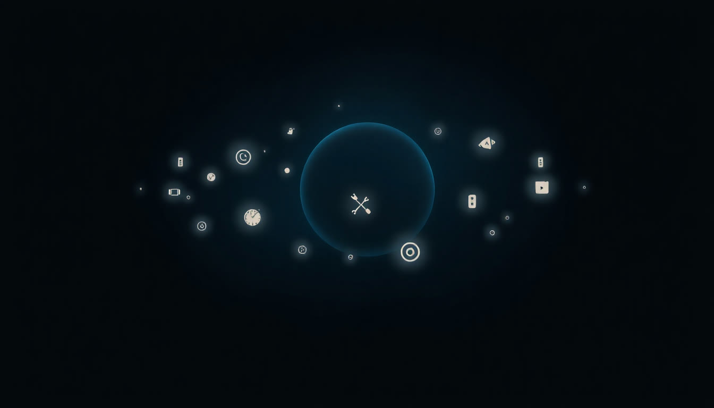
Google Labs
Зачем ходить на полигон
Это эксперименты
Google выкладывает инструменты до того, как они станут продуктом. Gemini, Flow и Notebook начинались здесь. Кто пришёл раньше, тот на год впереди.
Почти всё бесплатно
Эксперименты открыты на обычный Google-аккаунт. Лимиты есть, подписка не нужна. Часть проектов по списку ожидания.
По-английски и с VPN
Интерфейсы английские, часть недоступна для России без VPN. В шпаргалке каждый инструмент разобран по-русски: что, зачем и кому.
Flow · Flow Music · Pomelli · Stitch
Google Flow
Что: студия видео и картинок: Omni, Veo 3.1, Nano Banana Pro.
Зачем: ролик длиннее 10 секунд, персонаж, который держится из кадра в кадр, монтаж фразами.
Кому: блог, школа, реклама.
Flow Music
Что: целые песни и музыка под ролик с ИИ-продюсером.
Зачем: джингл, фон для рилса и презентации без проблем с авторскими правами.
Кому: всем, кто снимает контент.
Pomelli
Что: вставили адрес сайта, он вытащил ДНК бренда и генерит посты, баннеры, фотосессию товара.
Зачем: контент под свой стиль без дизайнера.
Кому: у кого есть сайт. Россия в списке стран не значится: VPN.
Stitch
Что: описали словами или нарисовали от руки, получили экраны приложения или сайта.
Зачем: показать подрядчику, как должен выглядеть ваш сервис, до оплаты.
Кому: кто заказывает разработку.
Как это выглядит: шесть входов на полигон
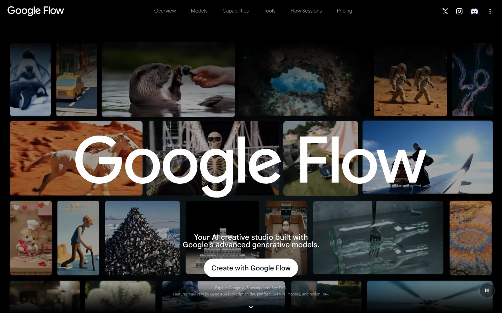
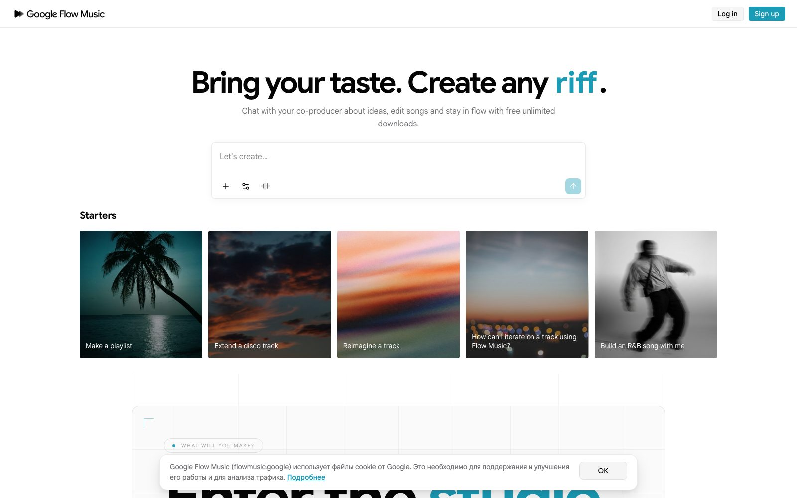
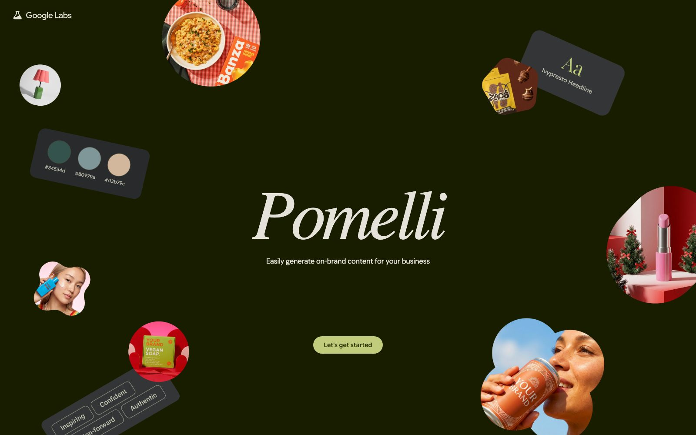
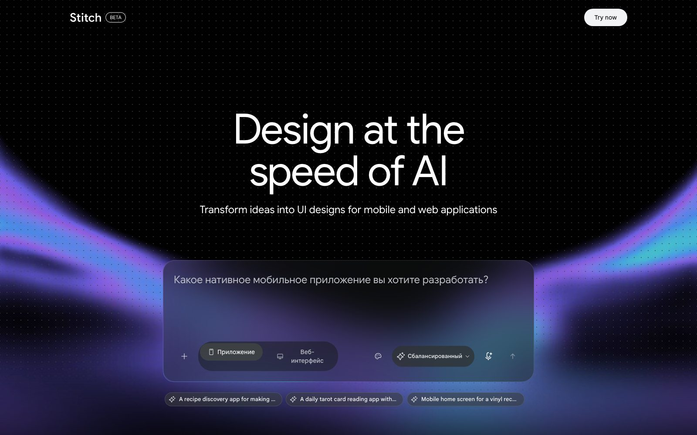
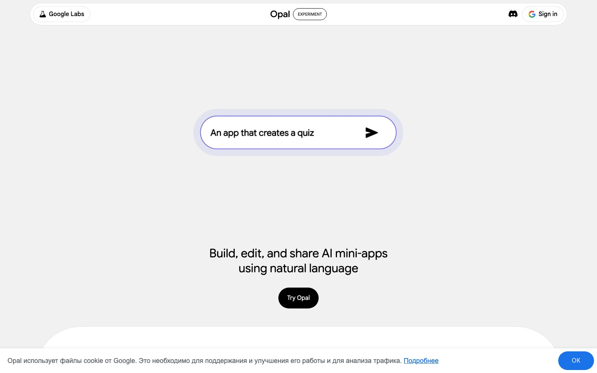
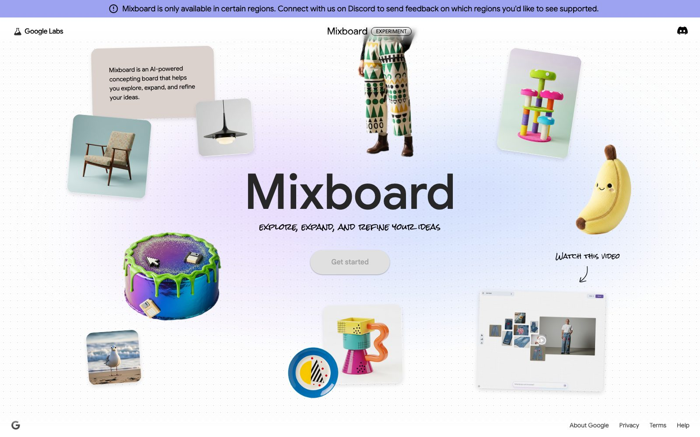
Что там лежит, кроме четырёх главных
Сначала выжмите бесплатное.
Платите, когда упёрлись дважды
Платят за объём и скорость, не за магию: модели внутри те же.
Если берёте: один сервис под главную задачу, а не пять сразу.
Пять суперсил за один вечер
Презентация
.pptx из промпта: Kimi, Notebook, Gamma, ChatGPT. Любой стиль обратным промптингом.
Фотосессия
Images 2.5 и Nano Banana: шаблоны, эскиз, команды через слэш, редактура своего фото.
Стандарт
ДНК бренда одним файлом. Билборд и карусель с первого раза, в любой модели.
Ролик
Фото + фраза = 10 секунд со звуком. Бесплатно, в Google Vids и Flow.
Полигон
Карта Google Labs: знаете, куда идти, когда упрётесь, и что появится через год.
Три дня до финала: всё про ваш бизнес
Стандарт и картинки
Дожать визуальный стандарт: два файла. Три картинки по нему: товар или услуга, деловой портрет, пост с текстом по-русски.
Презентация и ролик
Презентация под реальную задачу любым из четырёх путей. Плюс ролик из лучшей картинки в Vids или Kling.
Карусель и связка
Карусель на 10 слайдов по стандарту. Файл стандарта в базу знаний ассистента. Один инструмент из Labs потрогать и написать, зачем он вам.
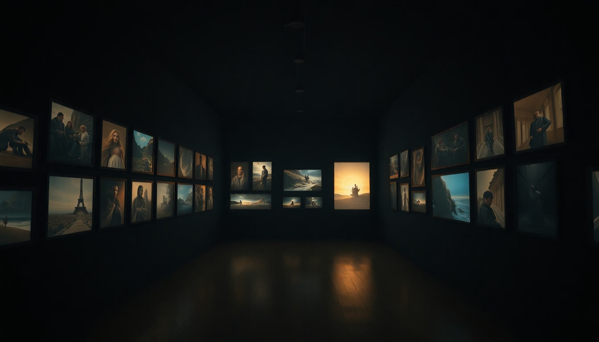
Клиент сначала видит, потом читает.
Теперь вас видно
Вторник, 15 сентября: финал, тест и сертификаты.